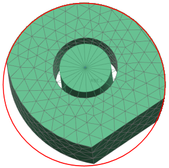

构建螺栓连接
螺栓连接命令将自动创建表示螺栓柄的单元，以及一对连接单元端部与周围网格的蜘蛛单元。借助于螺栓连接  命令，可以用有限元对以下类型的螺栓连接进行建模：
命令，可以用有限元对以下类型的螺栓连接进行建模：
-
用螺母固定的螺栓。
-
螺纹孔中的螺栓。
-
仅通过两个配对体之间的联接平面上的蛛网单元所表示的螺栓类型连接。
软件对螺栓的建模方式将取决于您指定的求解器环境。通常，1D 单元用于对螺栓柄建模。为了将这些 1D 单元连接至周围网格中的节点，软件会创建蜘蛛类型的连接。
